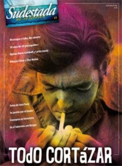

Buscar
La vuelta del gran Cronopio
En 2009 se publicó Papeles Inesperados, una recopilación de textos de Julio Cortázar nunca editados en libros. Se trata de colaboraciones para revistas, cartas, cuentos, poemas, entrevistas, capítulos desechados en sus novelas. Nuevas maravillas cortazarianas, guardadas durante años, que salieron a la luz para el deleite de los que tengan la suerte de hacerse con ellas.
Edición Especial N° 1
todo CORTÁZAR
Sudestada de Colección
Comprar edición impresaSumario
Compartir Articulo
La memoria siempre tiene dueño. El pasado termina signado por las versiones oficiales de quienes se imponen por la fuerza de la historia y dictan sentencia sobre lo que podemos recordar. Lo demás es olvido. Lo demás es mentira. Pero la memoria es una construcción y el pasado, un universo de pequeñas odiseas que es necesario recrear. "Hasta que los leones tengan sus propios historiadores, las historias de cacería seguirán glorificando al cazador", reza un proverbio africano. Las leyendas se ocupan, de ese modo, de la versión de los cazadores. Pero hay momentos en que el tiempo se pliega, en que la leyenda regresa y en su narración irrumpen oscuros pasajes antes ignorados, claves cifradas ocultas allí, en la versión de los cazadores, que despiertan la inquietud de los poetas y los empujan a saltar el aburrido rigor de lo conocido. Entonces la leyenda se trastoca, muta, y esos movimientos, aunque mínimos, rebotan hasta el presente y cambian la lectura de la historia. Sin temor a equivocarnos, podemos detectar uno de esos contados pliegues del tiempo en un año, 1949, y en un lugar, Buenos Aires. Los poetas inquietos son dos viejos conocidos de esta publicación, dos que suelen detenerse seguido en los suburbios legendarios para arrebatarles olvidos y silencios: se llaman Jorge Luis Borges y Julio Cortázar.
En ese 1949 (y vaya a saber uno por qué capricho del destino), los dos poetas publican, casi al mismo tiempo, dos narraciones que comparten escenario (el laberinto cretense) y personaje principal (el Minotauro). Sin saberlo, los dos se encuentran en la misma encrucijada, los dos llegan al punto del camino al mismo tiempo y en el mismo lugar: uno (Borges), ya escritor consagrado, el otro (Cortázar), recién afirmándose en sus primeros pasos. El primero publica en su libro El Aleph un extraño relato que bautiza con el nombre de "La casa de Asterión". El segundo da a luz un poema dramático nada convencional, con una estructura teatral, titulado "Los reyes". Los dos comparten el interés por la misma leyenda griega, los dos elaboran una relectura del mito y coinciden también en la elección del Minotauro como personaje principal; el monstruo apenas esbozado en la leyenda, ahora dueño de su historia (ahora sí, y por única vez, un león goza de sus historiadores). No serán estos los únicos paralelos entre ambas obras, entre ambos poetas, aunque menos que coincidencias habrá que hablar aquí, mejor, de extraordinarias paradojas.
La nota completa en la edición Sudestada de colección #1 -todo CORTÁZAR
Comentarios
Carolina Uribe
Articulos más vistos


LIBRERÍA SUDESTADA

Colección infantil

Distribuidora de Libros

Suscripción

Sudestada en URUGUAY

Otros articulos de esta edición
 Cortázar en Buenos Aires
Cortázar en Buenos Aires
El último adiós
Pocos meses antes de su muerte, en diciembre de 1983, Julio Cortázar viajó a Buenos Aires para despedirse. En nuestro ...
Las últimas notas
El de las últimas entrevistas a Julio Cortázar es casi un subgénero del periodismo criollo. Al menos tres notas al ...